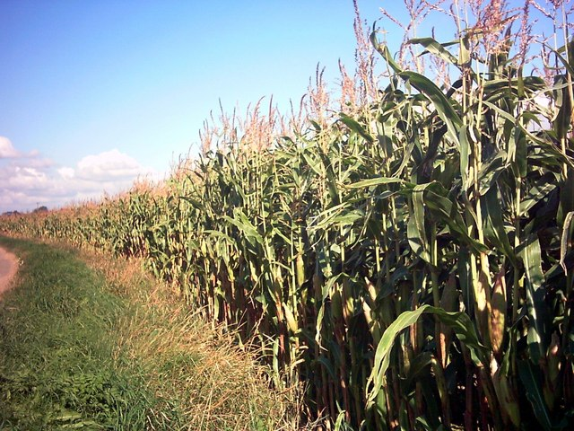

Air quality Impacts of Distributed Energy ResourcesA variety of electricity industry drivers are converging to allow for a resurgence of interest in natural gas fired distributed generation. This study assesses the potential implementation of distributed generation of electricity (DG) in the United States, including displacement of power from central power generation, and determines the potential impacts on emissions and air quality. The study includes four major tasks: (1) modeling of distributed generation market penetration using the DISPERSE model; (2) modeling of central power generation systems using the US-REGEN model (3) modeling of spatially and temporally resolved emissions; and (4) photochemical grid modeling. The CAMx regional model is used to evaluate the potential air quality impacts of DG, which includes both power-only and combined heat and power (CHP) units. |
Image by Bilfinger SE
Natural Gas pipelines in Ohio
|
Effects of Ammonia on SOA Formation and CompositionLittle is known about the effect of ammonia on SOA. However, recent observations suggest that ammonia actively participates in forming SOA and leads to chemical compounds in SOA that have unique optical properties. Our goal is to systematically explore the effects of ammonia on the yield, chemical composition, and optical properties of anthropogenic SOA using both experimental and modeling approaches. This includes lab experiments with SOA in smog chambers and implementing the results into two air pollution models. |

Image by Lollie-Pop
Nitrogen fed cows contributes to ammonia emissions
|
Secondary Organic Aerosol from Photooxidation of IndoleDespite the importance of indole in the natural environment, the formation of SOA from gas-phase indole has not been investigated previously. The first goal of the study is to produce indole SOA in a smog chamber and characterize its composition and optical properties. The second goal was to incorporate these results in an air quality model with a detailed chemical mechanism and state-of-the-art SOA chemistry in order to study the effect of indole on the total SOA. The results of this combined experimental and modeling study suggest that indole SOA contains strongly-absorbing compounds, and can contribute to SOA loading and decreased visibility in regions that contain plant species known to emit gas-phase indole. |

Image by Adrian Cable via Wikimedia Commons
Maize emits gas-phase indole
|
Climate Change Impacts on Air QualityAir quality simulations are performed to determine the impact of changes in future climate and emissions on regional air quality in the South Coast Air Basin (SoCAB) of California. The perturbation parameters considered in this study include (1) temperature, (2) absolute humidity, (3) biogenic VOC emissions due to temperature changes, and (4) boundary conditions. Air quality is simulated with meteorology representative of a summertime ozone pollution episode using both a baseline 2005 emissions inventory and a future emissions projection for the year 2023. Different locations within the modeling domain exhibit varying degrees of sensitivity to the perturbations considered. Temperature increases play the dominant role in determining the overall impact on ozone, PM, and SOA concentrations in both the individual and combined perturbation scenarios. |

Image by Ville Miettinen
Smog completely blockig sun in Delhi
|
{kind=link}